けんケンのJProgramming制作日記
JProgrammingを作っているとき、気づきました。
「画面を録画したほうがいいじゃん!」ということに。
そして、録画して作り始めたわけです。
そして、Webサイトに動画を追加しようとすると...
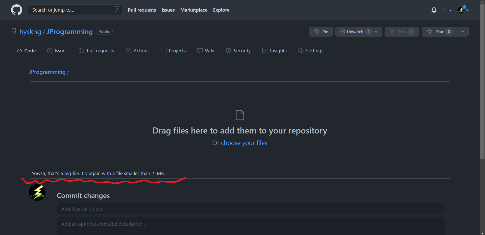
Yowza, that’s a big file. Try again with a file smaller than 25MB. だと。
どうやらファイルサイズが大きすぎるようです。
ファイルサイズを確認してみましょう。
25MB(25000000バイト)以内じゃないといけないようですが...
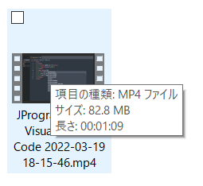
82.8MB??? でかーい！でかすぎるよぅ！でした。
何秒の動画だったら25MBに収まるんでしょう？
やってみた結果、約20秒を超えると駄目みたいですね...
いやいや、20秒で解説しきるって、ムリィィィィ！
なんとかファイルサイズが小さいまま録画できないものか...
でも、録画ソフトは標準でついている無料のソフトしか持ってません。
少しの動画を作りたいためだけに新しいのをダウンロードするのは嫌です。
そして僕は思いました。良いのがないなら自分で作ればいいじゃないか！と。
たぶん、解像度とかフレームレートを変更すれば容量は下がるはず！
では早速、 Python言語 で作っていきます！
Python は、 アプリ,AI などが作れます。頑張ればゲームもできます。
僕のお気に入り、いでよ！VisualStudioCode!!
(ちなみにこのサイトもVisualStudioCodeで作ってます)
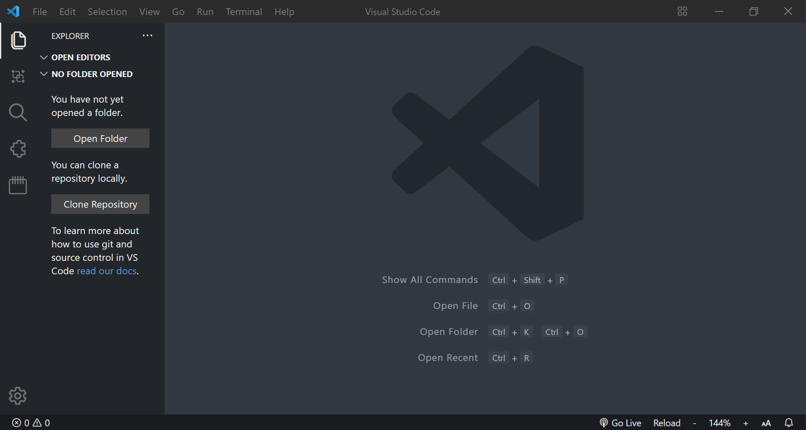
これがVisualStudioCodeです!
早速Pythonファイルを作ります！
名前はとりあえず ScreenRecording とします。
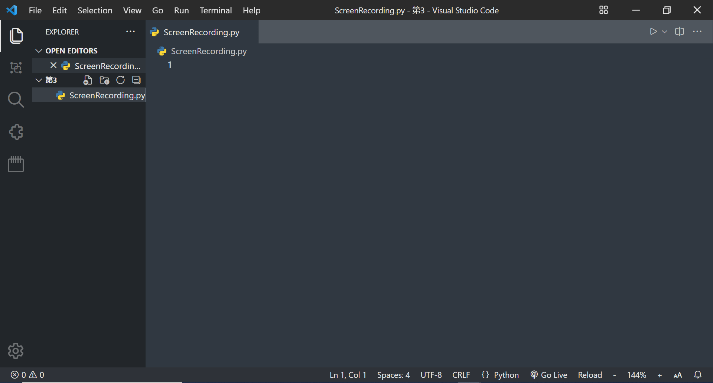
ココに書いていきます。まずは...
指定した秒数スクリーンをキャプチャし続ける→画像を合成→ビデオに変換
という感じで作っていきます！
※Pythonでは、 # が書かれている行の #の右側はコメントになります。
コメントは、プログラムではなく、後から見るとき
分かりやすくするためメモをする所です。
せっかくなのでコメントでプログラムの意味を書いておきます

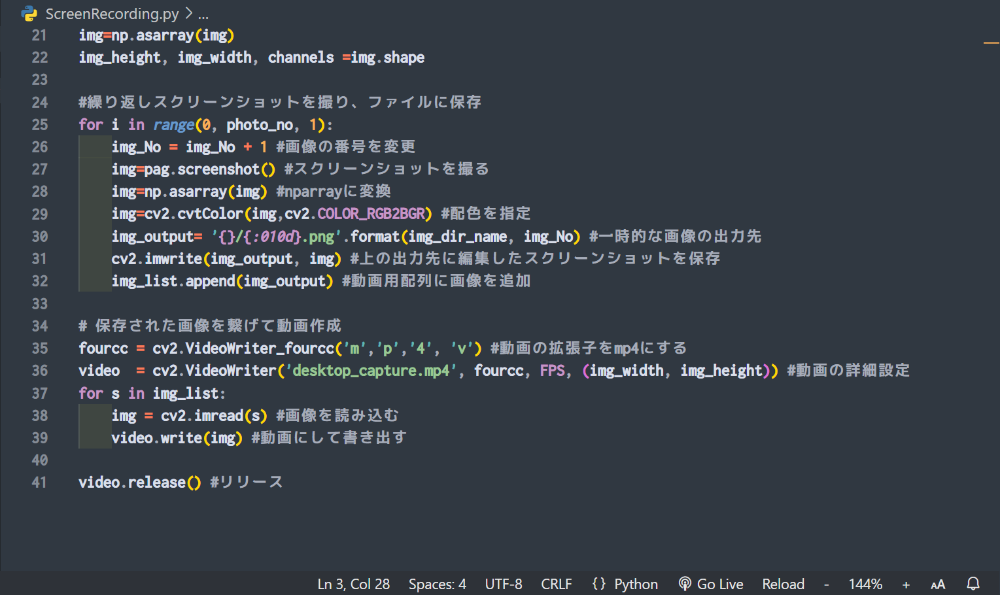
大体イメージ通りにできました。ココからプログラムを短くしていきます。
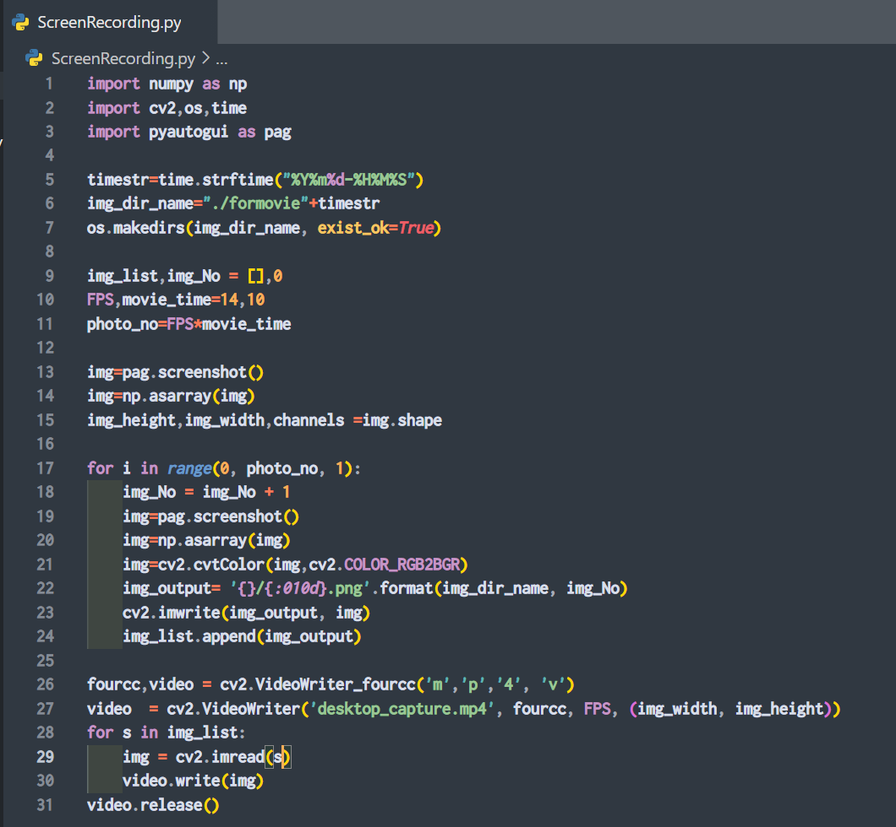
10行縮めることができました。
試しに実行してみると...
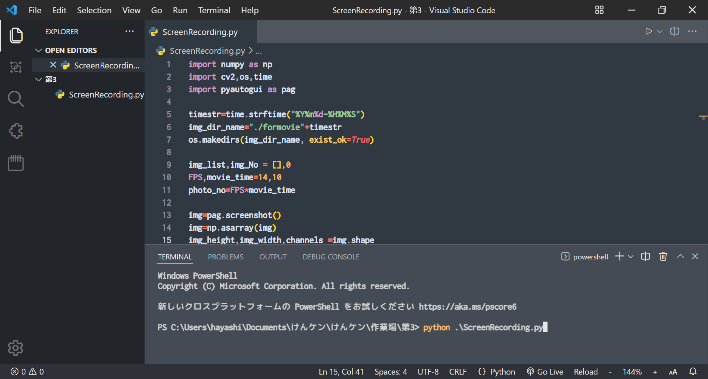
Enterキーで実行！
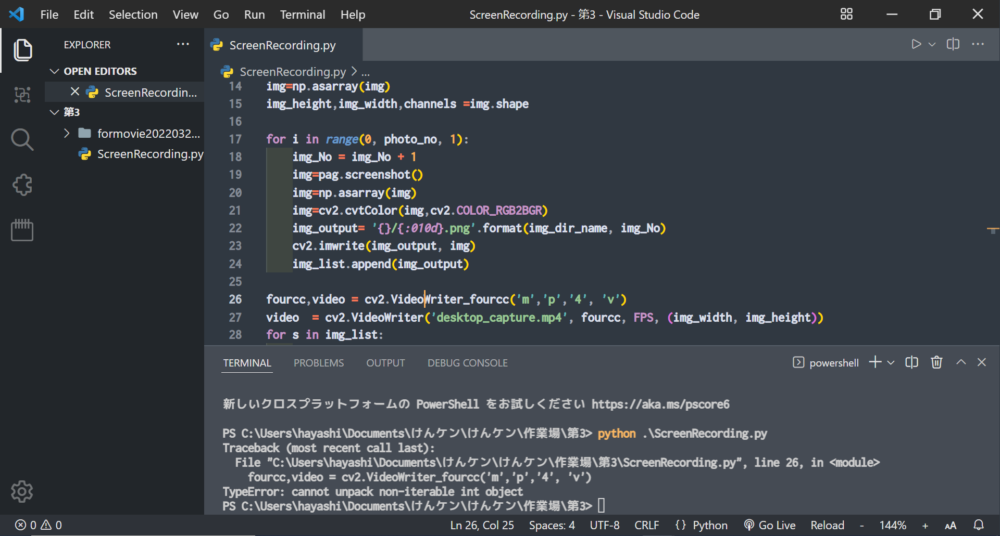
あれ？一時的にスクリーンショットを保存する所までできたのに
エラーがでた！！！解読してみよう！
Traceback (most recent call last):
これは エラーが発生した事を知らせています。
File "C:\Users\hayashi\Documents\けんケン\けんケン\作業場\第3\ScreenRecording.py", line 26, in <module>
これは どこでエラーが発生したかを知らせています。
line 26 なので、 26行目にエラーが出ていることになります。
fourcc,video = cv2.VideoWriter_fourcc('m','p','4', 'v')
ここがおかしいよと知らせています。
TypeError: cannot unpack non-iterable int object
エラーの理由は入力ミスであること、同時に変数を宣言できないことを知らせています。
確認してみると、変数の同時宣言で短くしようとして諦めた跡が残っていました。
コードの fourcc,video というのは、変数2つを同時宣言しています。
それに対して、 = の後 cv2.VideoWriter_fourcc('m','p','4', 'v')と、
一つの値しか渡していません。これがエラーのもとだったようです。
変数の同時宣言をやめます。
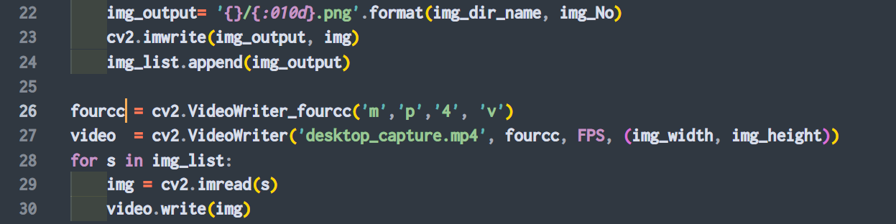
これで実行すると...?
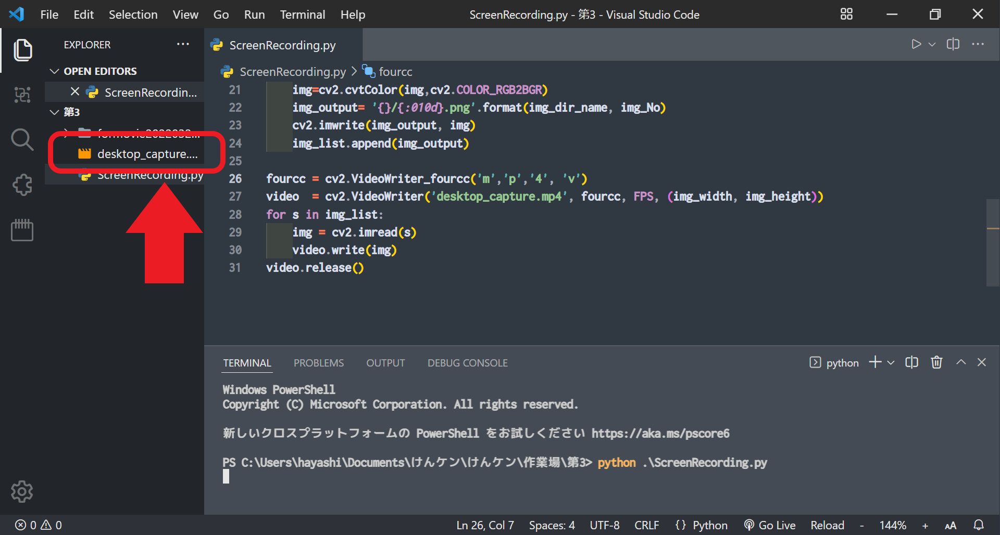
しっかり動画が生成されました！やった～♪(ちゃんと見れました)
ですが、一時的に作った画像フォルダ(formovieってやつ)が残ってます。
動画ができたら、formovieを消すようにしましょう！
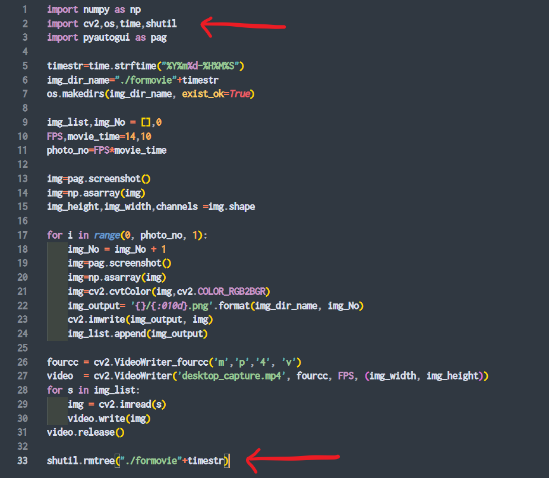
これで実行してみます。
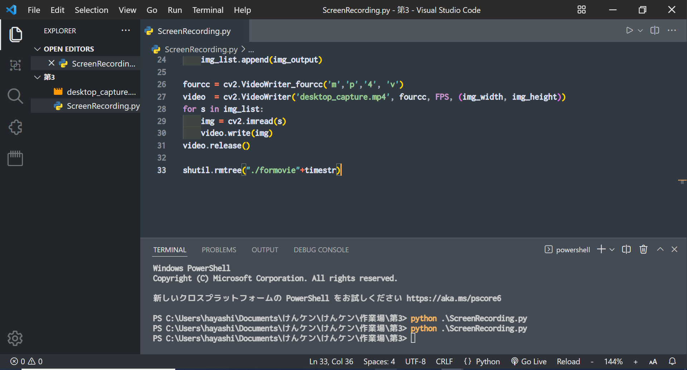
しっかりformovieが消えました！
とりあえず今回の完成系は、
①プログラムを実行する
②コマンドプロンプトが立ち上がる
③解像度などを入力する
④実行する
ができるようにします。
まあ、とっても簡単ですが。
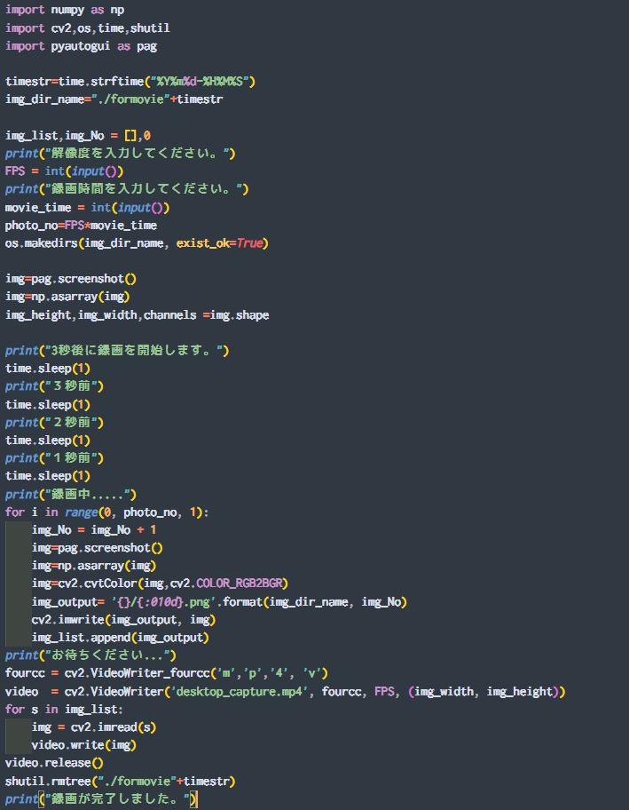
こんな感じになりました。実行してみます。
上手く動きました！欠陥がありますが、
このページには公開せず、一人で少しづつ直していくこととします！
では、実際に撮って、サイズを確認しますと、
FPS 16 で 10秒撮っても 7MB二しかなりませんでした！
これなら35秒撮っても大丈夫です！FPS下げればもっと容量が減ります！
いやー疲れた...楽しかった！ ということで、Scratchの解説では
このソフトを使った動画も使っていきます！ よろしくです！